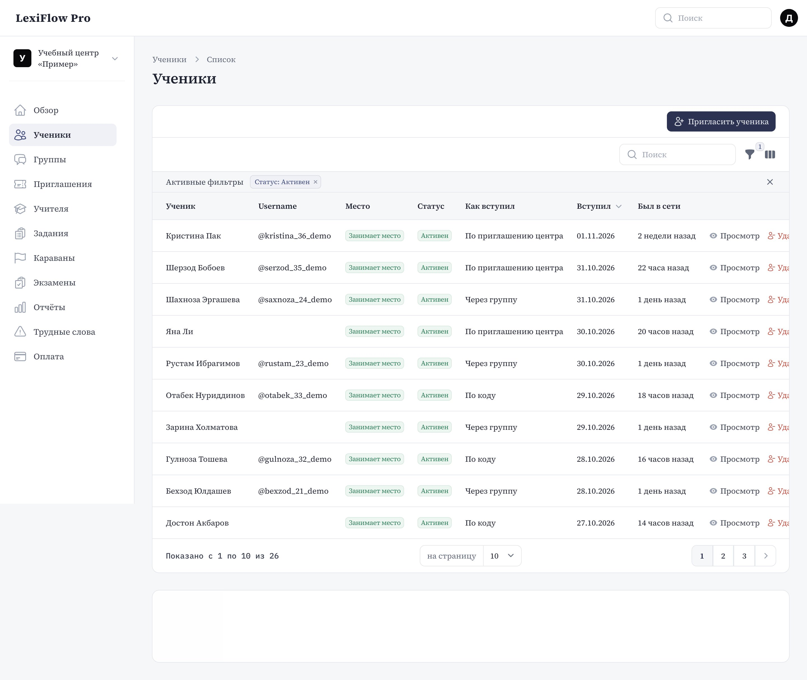
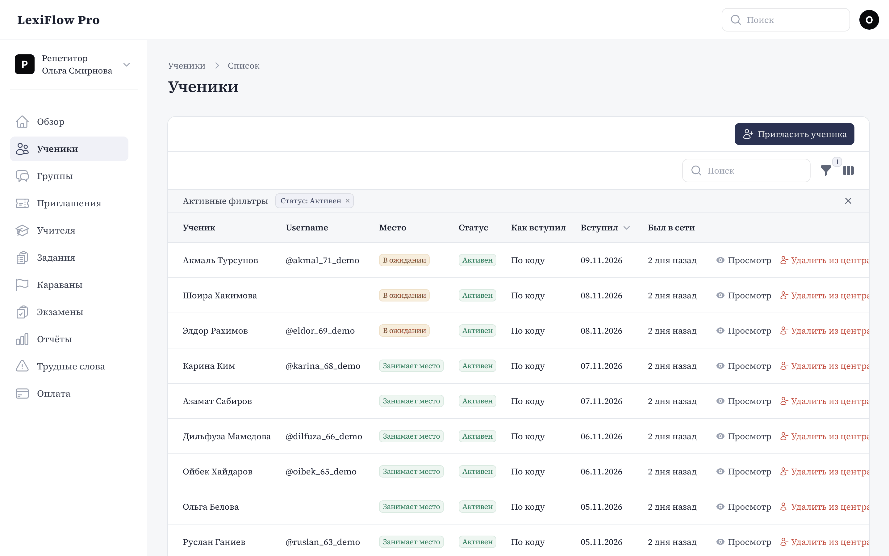
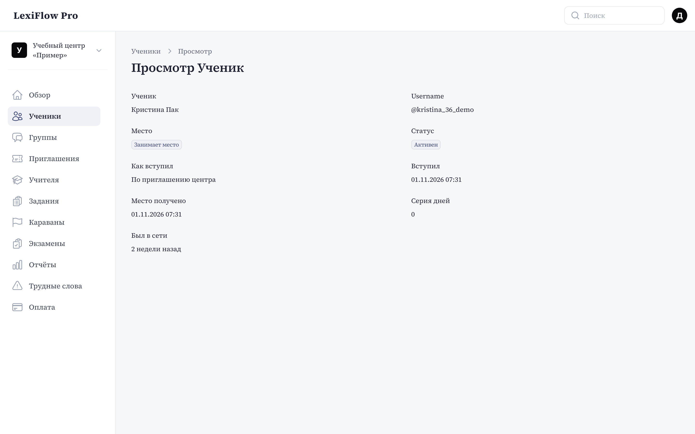
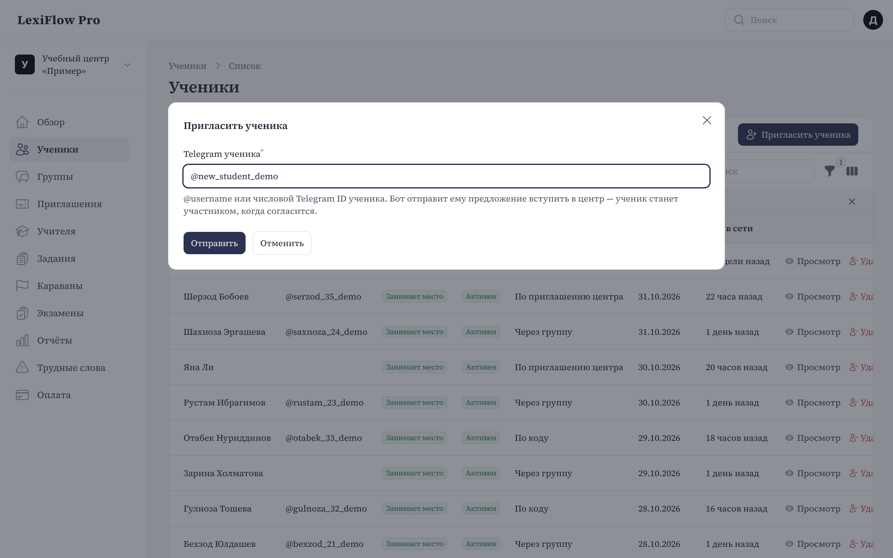
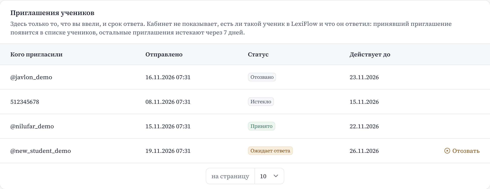
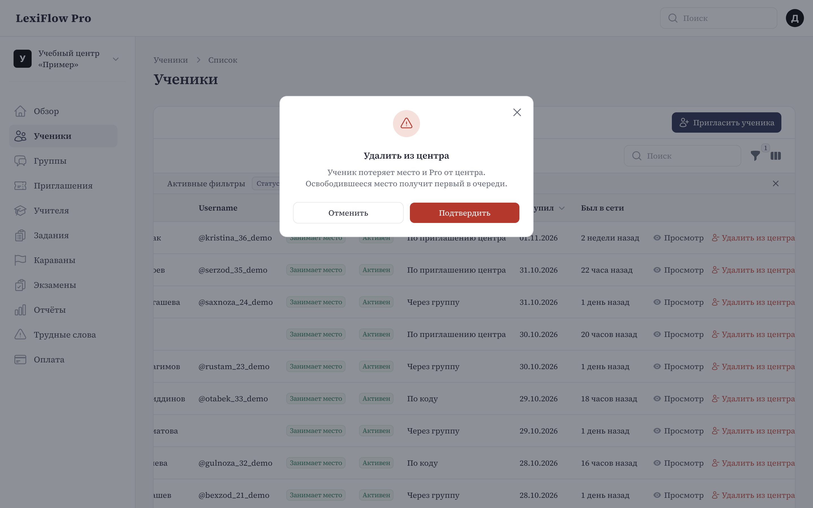
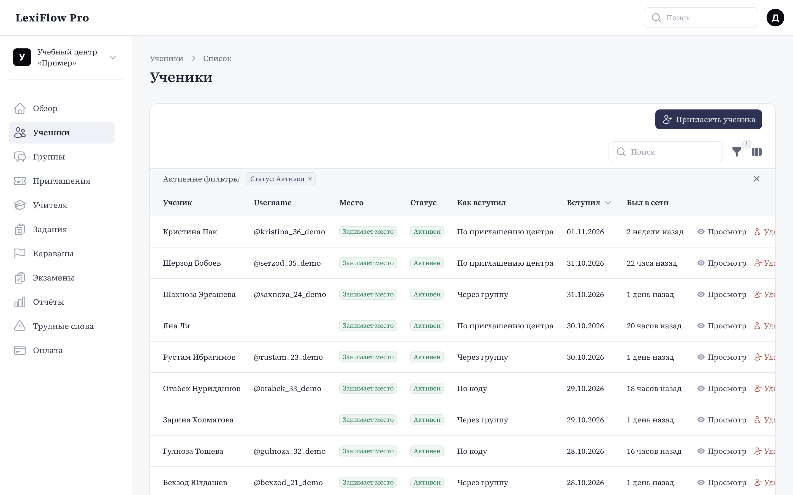
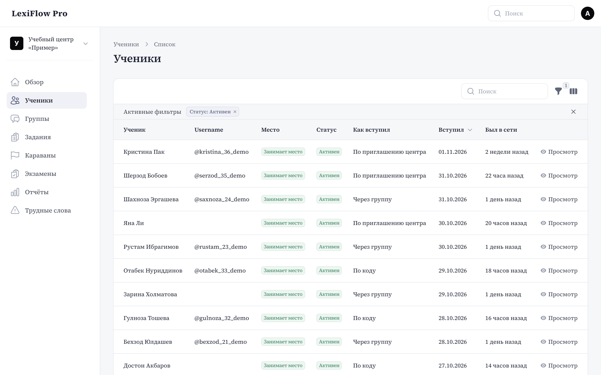
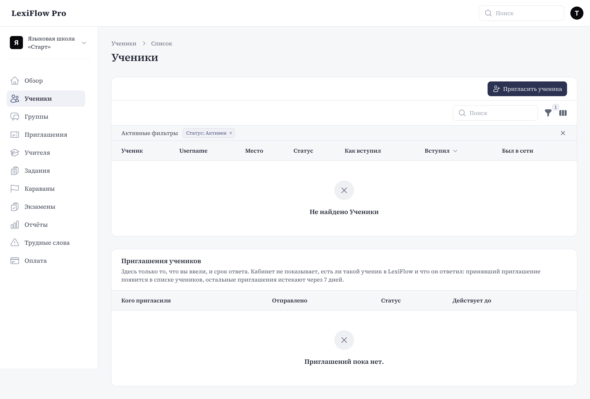

Здесь список участников центра и их места. Ученик попадает в центр тремя путями: по ссылке-приглашению с кодом (глава «Приглашения»), вступив в привязанную Telegram-группу центра, или приняв в боте приглашение, которое отправил владелец.
Кто имеет доступ: владелец видит всех участников центра, в том числе бывших, приглашает и удаляет. Учитель видит только действующих учеников своих групп и ничего не меняет.

| Колонка | Значения |
|---|---|
| Ученик, Username | имя из Telegram и @username, если он есть. Поиск — по имени и username |
| Место | «Занимает место» — получает Pro от центра; «В ожидании» — ждёт свободного места; «Без места» — у бывших участников |
| Статус | «Активен», «Вышел», «Удалён» |
| Как вступил | «По коду», «Через группу», «По приглашению центра» |
| Вступил, Был в сети | дата вступления; когда ученик последний раз открывал LexiFlow (только у действующих) |
Фильтры (значок воронки): Статус (можно выбрать несколько) и Место. Чтобы увидеть бывших учеников, выберите в статусе «Вышел» и «Удалён».

«Просмотр» открывает карточку ученика: место, статус, как вступил, когда получил место, серия дней и «Был в сети». Личные занятия и ответы ученика кабинет не показывает.


Что увидит ученик: бот пришлёт ему сообщение «Учебный центр «…» приглашает вас вступить…» с кнопками «Вступить» и «Отклонить». Участником центра он станет, только когда нажмёт «Вступить».
Под списком учеников — блок «Приглашения учеников»: что вы ввели, когда отправили, статус и срок.

| Статус | Что значит |
|---|---|
| Ожидает ответа | действует 7 дней; можно «Отозвать» |
| Принято | ученик вступил — он уже в списке учеников |
| Истекло | ответа не было 7 дней; можно пригласить снова |
| Отозвано | вы отозвали приглашение |



